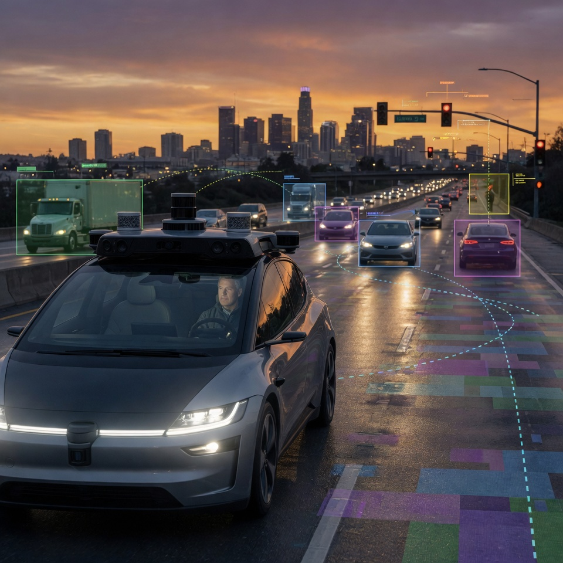
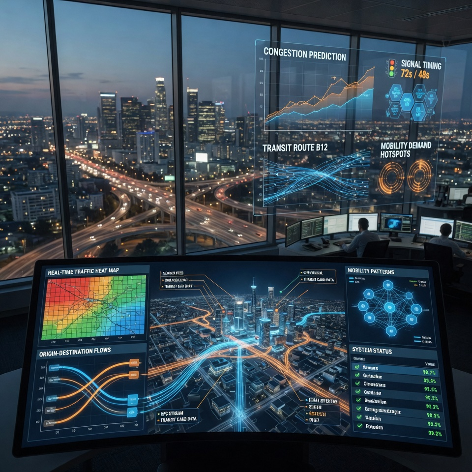
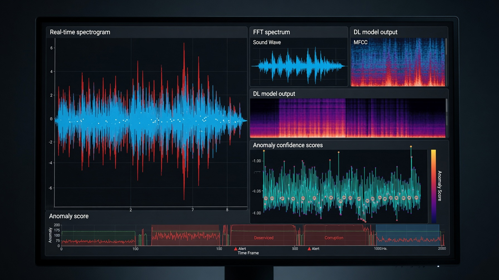
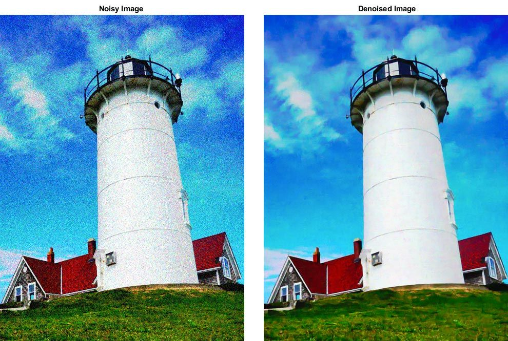
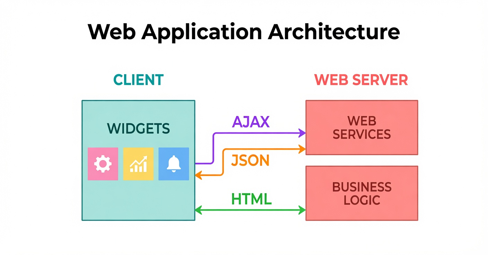

HNU AI DataScience Labs
HNU AI DataScience Labs
Research
Lab 2

Smart Mobility and Autonomous Driving
We study AI models that let vehicles perceive their surroundings and decide how to act, and we evaluate how those decisions perform once they meet real road conditions.
Autonomous driving asks a vehicle to do in milliseconds what a human driver does by instinct: read the scene, predict what everything else will do next, and commit to a maneuver. Our work covers the learning models behind that loop, from perception on sensor data through to driving policy.
Because a model that performs well on a benchmark can still fail on an unfamiliar road, we place equal weight on evaluation — measuring how systems behave in the conditions and edge cases that real deployment brings, and feeding what we find back into the models.

Transportation Big Data and Intelligent Transport Systems
We turn large-scale mobility and geospatial data into an account of how people and goods actually move — and into evidence that transport policy and services can be built on.
Every trip leaves a trace. Traffic sensors, transit records, and location data together describe how a city moves, but only after the raw signals are cleaned, joined across sources, and placed on the map. We build the analytics that make that possible, combining transportation big data with geospatial information to model demand, congestion, and travel behavior.
These models support Intelligent Transport Systems (ITS) — where the analysis feeds back into signal control, transit planning, and traffic operations. We also study the data economy around mobility: how transport data is shared and valued once it becomes a resource that public agencies and private operators both depend on.
Lab 3

Deep Learning for Audio Anomaly Detection
We develop deep learning models that listen to machines and sound out what is wrong — detecting the abnormal sounds that signal a fault, often before it becomes a failure.
Equipment tends to announce trouble before it breaks. A bearing starts to grind, a motor changes pitch — audible to an experienced ear, but easy to miss on a factory floor and impossible to monitor around the clock by hand. We train deep learning models to do that listening continuously.
The central difficulty is that faults are rare: a working machine produces thousands of hours of normal sound and almost no examples of failure. Our research therefore concentrates on learning what normal sounds like well enough to recognize any departure from it, rather than learning each fault type from labeled examples that do not exist in sufficient number.
Project
Lab 1

Deep Learning Based Image Analysis
Period · Funding agency
Building recognition and segmentation models that read images automatically, and adapting them to the domains where the images actually come from.

Web Applications for Big Data Services
Period · Funding agency
Designing web platforms that put large-scale data in front of the people who need it — collecting, processing, and visualizing it in a form they can act on.